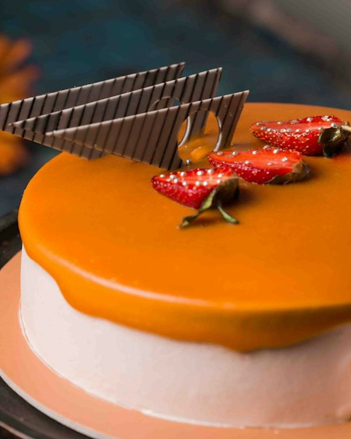

Десерти, які виходять з першого разу.
Один технологічний посібник: 24 рецептури, 48 сторінок, грамівки, технологія та собівартість. Не курс. Не набір окремих карт. Робочий документ для вашої кухні.
доступ на 12 місяців
PDF одразу після оплати оновлення безкоштовно підтримка в Telegram
Не ще один курс. Робочий документ.
Кондитерська тримається не на натхненні, а на повторюваності. Коли рецепт працює у вівторок і в суботу, коли новий кондитер розуміє технологію без здогадок — тоді з’являється спокій.
Я зібрала в один посібник те, що зазвичай доводиться збирати по крупицях: точні грамівки, температури, вихід, собівартість і типові помилки. Усі розділи — в одному PDF. Без підписок і допродажів.
Один посібник. Усі відповіді.
Від базових пропорцій до сезонних десертів. Ви не купуєте розділи окремо — усе вже всередині.
- 01Основи
- 02Торти
- 03Муссові десерти
- 04Тарти
- 05Печиво
- 06Без глютену та сезонні

Не просто рецепт.
Система.
Грамівки, які працюють
Брутто й нетто, вихід на форму 16, 18 і 20 см. Без «на око» і перерахунків у голові.
Технологія, а не просто рецепт
Температури, час, послідовність, критерії готовності та типові помилки.
Собівартість одразу
Кожна картка містить розрахунок сировини, роботи та рекомендованої ціни.
Одна структура
Ви швидко знаходите потрібне на кухні й не витрачаєте час на різні формати.
Оновлення назавжди
Купуєте один раз — отримуєте всі наступні версії посібника безкоштовно.
Сторінки, з якими хочеться працювати.

Спокій, який помічають.
Не обіцянки, а конкретні історії: стабільність, собівартість, навчання команди. Усі відгуки опубліковані з дозволу покупців.
«Найбільше зайшло те, що все в одній структурі: не треба щоразу звикати до нового формату. Відкрила — і працюєш».Олена К. · домашній кондитер
Усі розділи. Одна ціна.
Без підписок, допродажів і «повного пакета» за додаткові гроші. Ви купуєте один посібник — і отримуєте всі 24 рецептури, технологію та оновлення.
без прихованих платежів
- 48 сторінок, 24 рецептури
- PDF одразу після оплати
- Доступ 12 місяців
- Оновлення безкоштовно
- Можна роздрукувати
- Підтримка в Telegram
Оплата карткою, Apple Pay або Google Pay. Для закладів — рахунок за реквізитами.
Коротко про головне.
Якщо не знайшли відповідь — напишіть у Telegram. Відповідає людина, а не бот.
Написати в Telegram